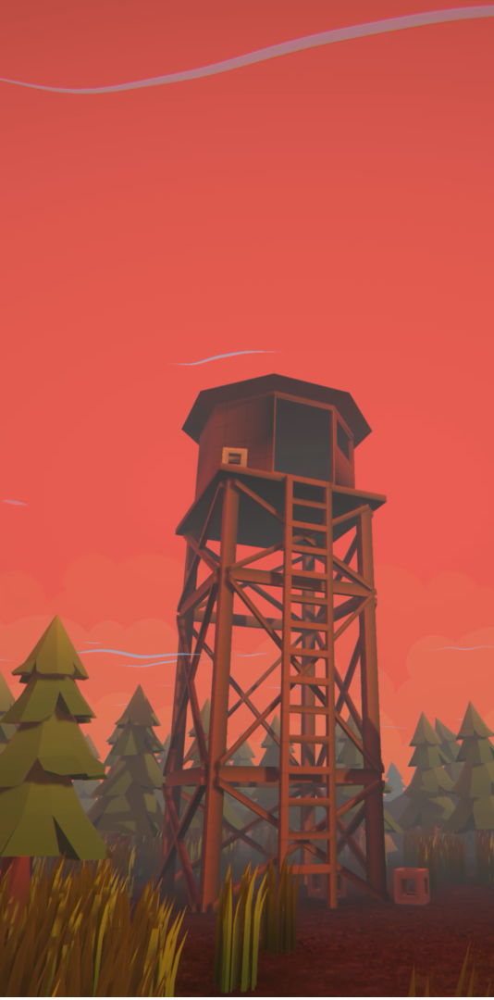
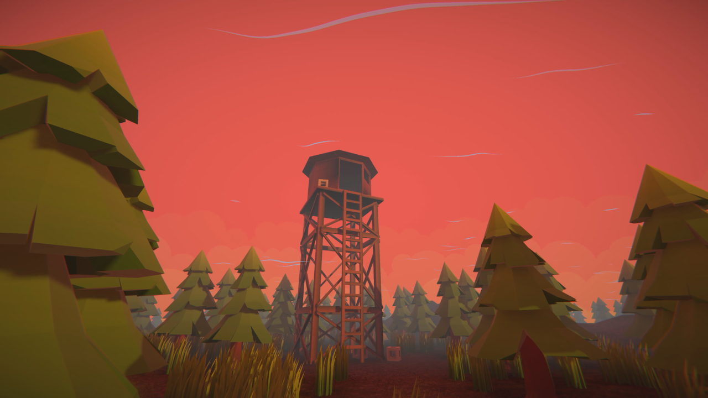
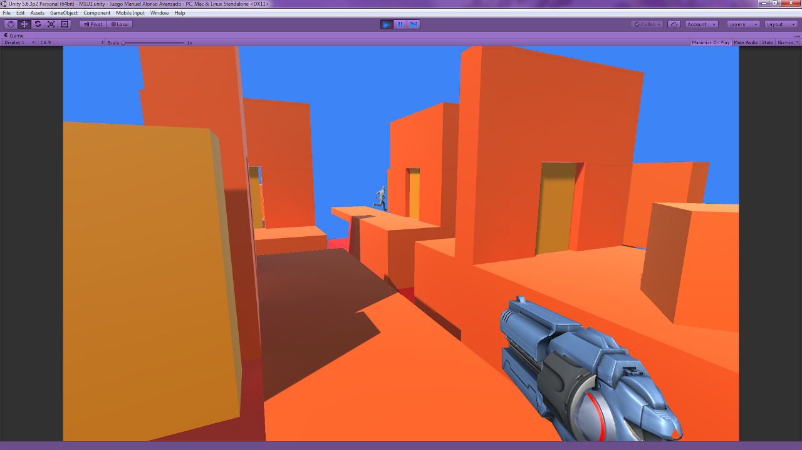
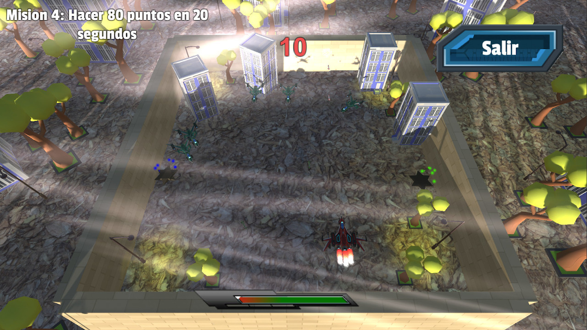

Hi my name is Manuel
Get to know my work as a Unity Developer
I am a Systems Analyst and I have been developing videogames for some time using Unity as the main tool.
I started a few years ago in my free time and I was training myself, exploring Unity and creating various small projects that you can see below.
I started a few years ago in my free time and I was training myself, exploring Unity and creating various small projects that you can see below.
Projects
Portfolio of jobs

Demo using ProBuilder and Cinemachine

Demo using ProBuilder and Cinemachine

24 CATS

First person shooter

Fixed Shooter

Word of chess